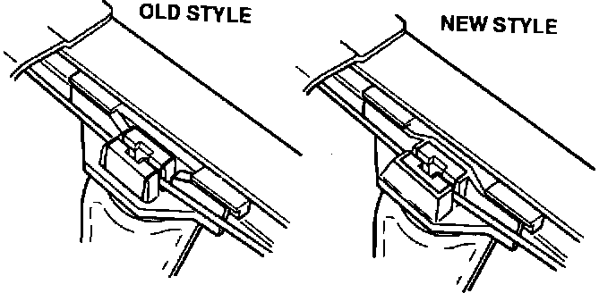

Door Glass - Drops Into the Door
NSX Door GlassDrops into Door

If the door glass on an NSX drops into the door and won't respond to the window switch, the cable holder has probably come out of the regulator. The fix is to replace the regulator assembly but, when you do, make sure it's the new type. The cables connect to the regulator via a plastic cable holder. Originally, this holder was just supported by a tab at each end. The new regulator supports the cable holder on all four sides. If you have an old-style regulator in stock, return it and order another one.